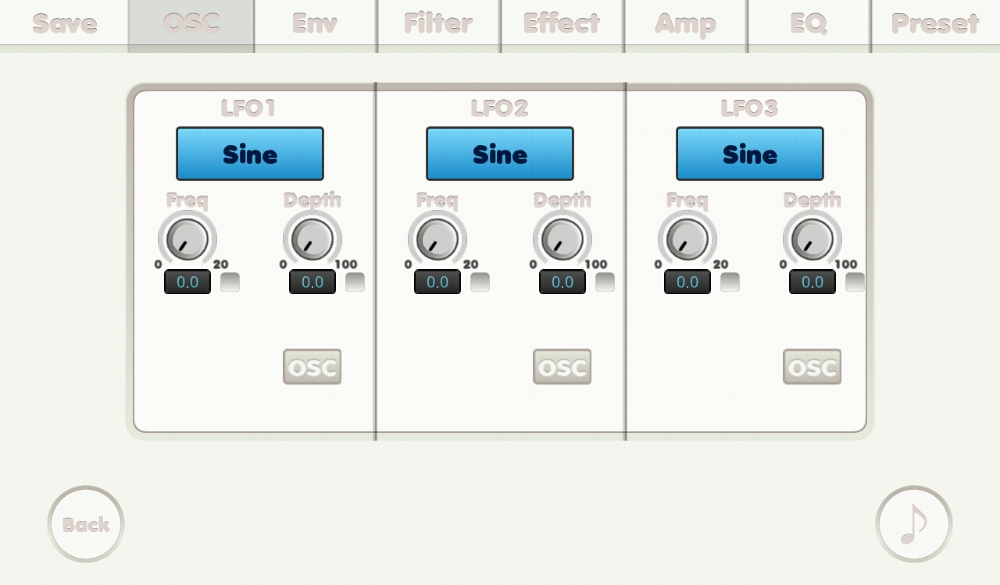

{% include JB/setup %}
OSC LFO screen

- Sound waves
-
- Sine wave
- Sawtooth wave
- Square wave
- Triangle wave
- Frequency knob: frequency. Turn this knob will turn the LFO on.
- Depth knob: depth. Turn this knob will turn the LFO on.
- Q knob: q. Turn this knob will turn the LFO on.
- Check boxes: if it was checked its related number is affected by mutate feature.
- OSC button: leads you to OSC screen.